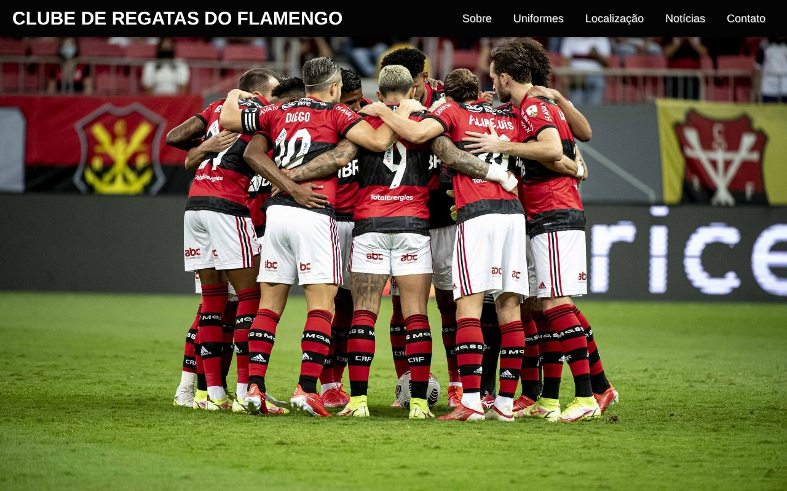
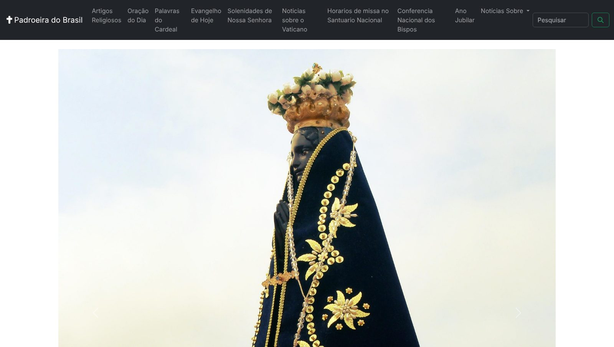

PROJETO 01HTML • CSS
Clube de Regatas do Flamengo
Site sobre o Flamengo com a história do clube, galeria de uniformes, localização no mapa, portal de notícias e formulário de contato.
Ver projetoOLÁ, SEJA BEM-VINDO(A) AO MEU PORTFÓLIO
Estou construindo minha jornada na tecnologia, aprendendo, criando projetos e transformando ideias em soluções.
01 / QUEM SOU
Meu nome é Gabriel Nascimento dos Santos, Tenho 18 anos, sou natural de São Sebastião, no Distrito Federal, onde moro desde que nasci, e atualmente curso Análise e Desenvolvimento de Sistemas na UDF.
Meu interesse pela Tecnologia da Informação surgiu recentemente, por influência de pessoas próximas, pela curiosidade em entender como a tecnologia funciona e pelas oportunidades que o mercado oferece. Tenho especial interesse em programação e cibersegurança, áreas nas quais pretendo aprofundar meus conhecimentos.
Sou uma pessoa curiosa, dedicada e disposta a aprender. Meu objetivo é construir uma carreira sólida na área de TI, conquistar uma vaga no serviço público por meio de concurso e continuar evoluindo profissionalmente. Também possuo inglês básico e pretendo aprimorar minhas habilidades.
02 / APRENDIZADO
Tecnologias e conhecimentos que estou desenvolvendo na faculdade.
Estrutura de páginas web
Fundamentos de programação em C
Interatividade para páginas
Modelagem de banco de dados
Dica: mantenha apenas as tecnologias que você já estudou e ajuste as descrições ao seu nível.
03 / NA PRÁTICA
Alguns trabalhos que fazem parte da minha evolução.

PROJETO 01HTML • CSS
Site sobre o Flamengo com a história do clube, galeria de uniformes, localização no mapa, portal de notícias e formulário de contato.
Ver projeto
PROJETO 02HTML • BOOTSTRAP • FONT AWESOME
Site sobre Nossa Senhora Aparecida feito com Bootstrap, com menu responsivo, carrossel de imagens, cards e a história da padroeira em acordeão.
Ver projetoREPOSITÓRIOS
Confira meus códigos, exercícios e os próximos projetos que estou desenvolvendo.
Meu GitHub04 / ALÉM DO CÓDIGO
A tecnologia é uma parte da minha história. Aqui entram as coisas que me fazem ser eu.
Clique em um dos meus interesses para mudar o visual desta seção:
Escolha um interesse para ver a mudança de fundo.
05 / VAMOS CONVERSAR?
Entre em contato. Será um prazer trocar experiências e conhecer novos projetos.
Fale comigo